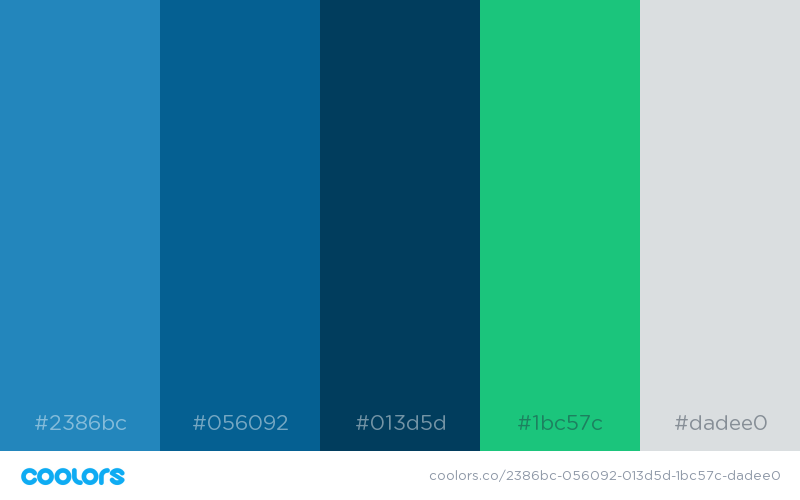

Color Scheme
- #2386BC Main Blue : Header, Footer, and large background elements
- #056092 Dark Blue : Navigation Menu, and background to show contrasting sections
- #013D5D Darker Blue : Hover menu background and to divide sidebar/large sections as needed
- #1BC57C Green Accent : Large buttons and drawing attention to important elements
- #DADEE0 Silver Accent : "Silver lining" for text color on darker backgrounds and borders